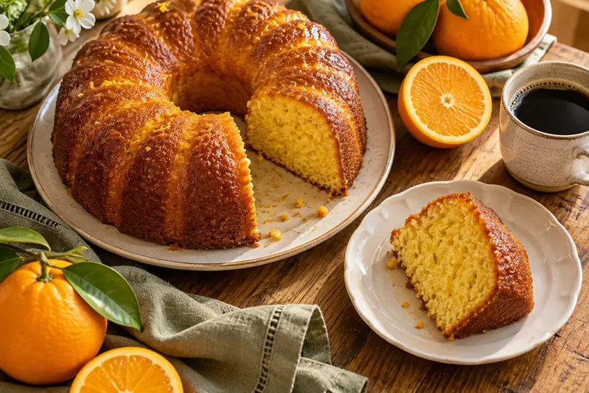

DA COZINHA DELA PARA A SUA
O que vamos preparar hoje?
As receitas da vó Maria Carmela, sempre pertinho de você.
♡ SABOR DE CASATem receita que
Tem receita que
é um abraço.
Guarde os sabores da Maria Carmela.
Com a receita dela, suas fotos e seus vídeos.
FEITO POR VOCÊ. INSPIRADO NELA.

Um pouquinho de afetoem cada receita.
Uma receita para cada vontade
Explore seu livroSEU ACERVO DE AFETO